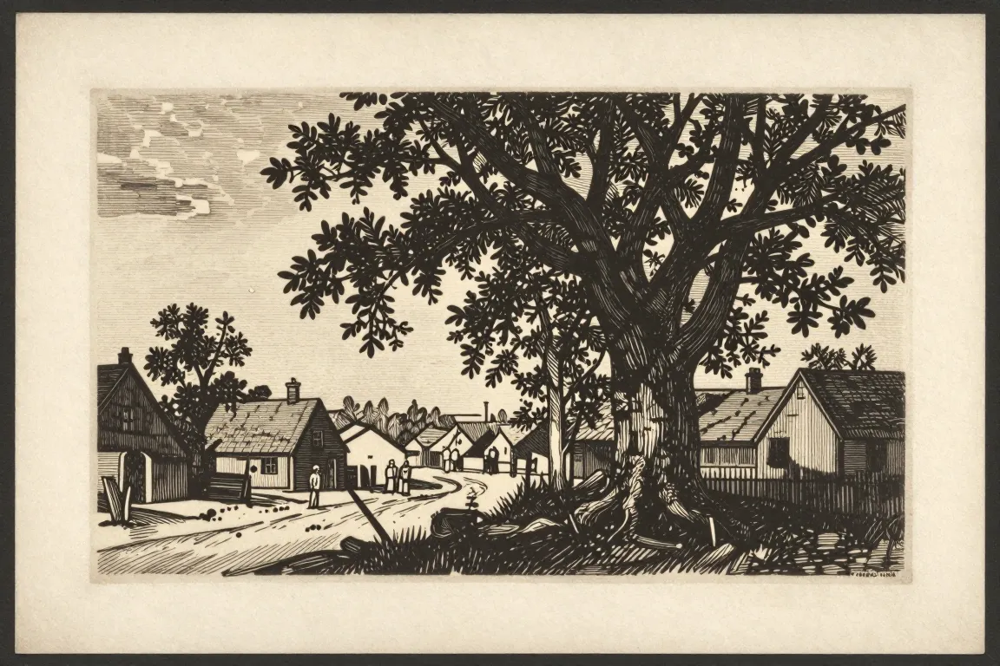

Художник рисует иглой по восковому грунту на металлической пластине, а кислота протравливает линии. Линия свободна, как линия пера. Калло сделал её точной; Рембрандт сделал её тёмной и живой, с тоном от штриховки и от краски, оставленной на пластине.

Главная идея
Игла, идущая по воску так же легко, как перо, даёт художнику свободную линию, а кислота даёт ей глубину.
Принципы дизайна
Рисуйте свободной ровной линией иглы; ширина берётся от времени в кислоте, а не от нажима руки.
Тёмные места делайте более частой штриховкой и более долгим травлением: покрывайте лаком светлые линии и протравливайте тёмные снова.
Штрихуйте в 1–4 направлениях; пусть линии будут свободными и чуть неровными.
Оставляйте на пластине плёнку краски (тон пластины), чтобы получить мягкую тьму там, где изображению нужна атмосфера.
Держите широкое поле и чёткий след пластины.
Печатайте тёплой чёрной или коричнево-чёрной на кремовой или японской бумаге.